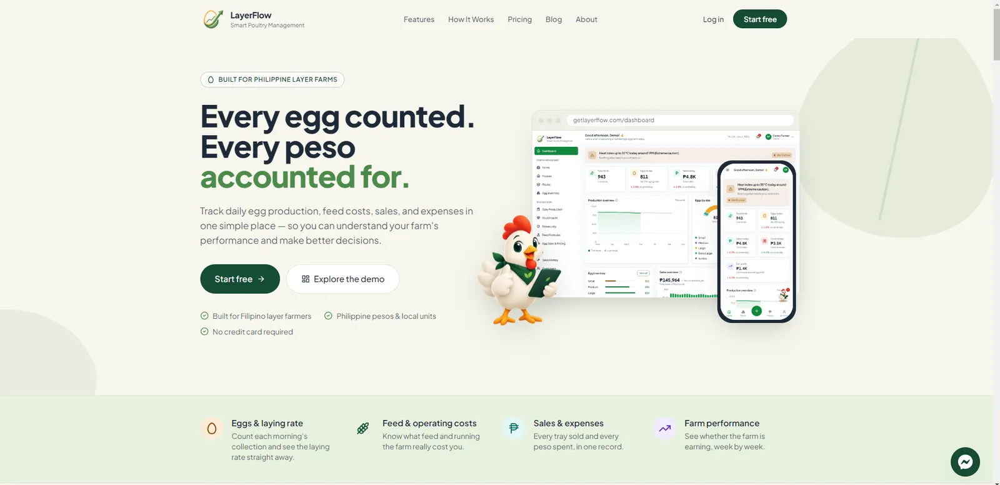
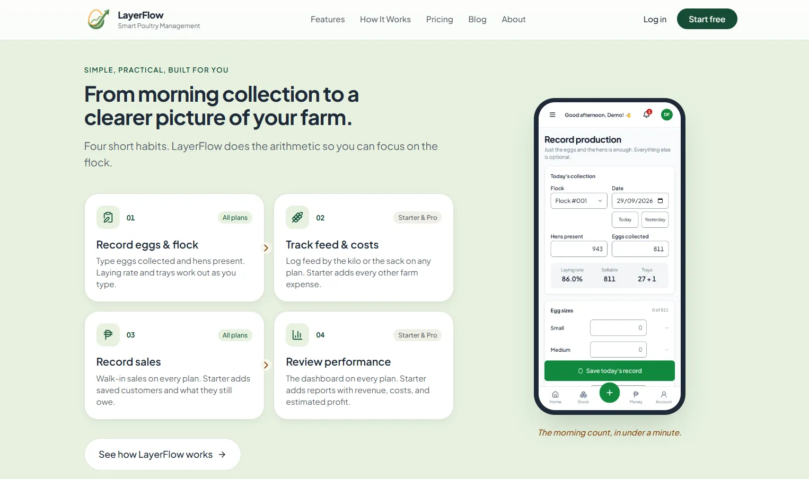

Farm & flock management
Organize farm operations, houses, and flocks with multi-user farm management support.
Personal project · SaaS product
An independently developed smart poultry management SaaS that helps Philippine layer farmers track daily operations and make informed farm decisions.

Overview
LayerFlow is a smart poultry farm management SaaS designed for Philippine layer farmers. It brings operational records and production context into a single product, helping users follow flock performance, egg output, feed usage, expenses, and farm trends.
I independently take the product from concept and UI/UX through frontend and backend implementation, data modeling, application logic, deployment, search optimization, and ongoing product improvements.
My role
Product capabilities
Organize farm operations, houses, and flocks with multi-user farm management support.
Record egg production, feed consumption, inventory, mortality, and culling activity.
Track expenses and review production analytics and reporting for farm operations.
Includes an AI-powered farm assistant, notifications and reminders, and subscription management capabilities.
Payment integration readiness: PayMongo integration code has been prepared and tested, but is not activated for live business operations while business registration requirements are pending.
Architecture
High-level application architecture based on the deployed product stack.
SEO & discoverability
Search visibility is part of the public product lifecycle. I implemented technical and on-page SEO, configured metadata and sitemap behavior, connected Google Search Console, and supported search engine indexing. This work is intended to improve discoverability; no specific ranking or traffic outcome is claimed.
Technology
Results & impact
LayerFlow delivers a live, independently built SaaS product tailored to Philippine layer farming workflows. It brings production, feed, flock, and financial tracking into a purpose-built application. No unsupported user, revenue, or search ranking metrics are presented.
Project gallery

Let's connect
Let's discuss the product, engineering, and delivery challenges.